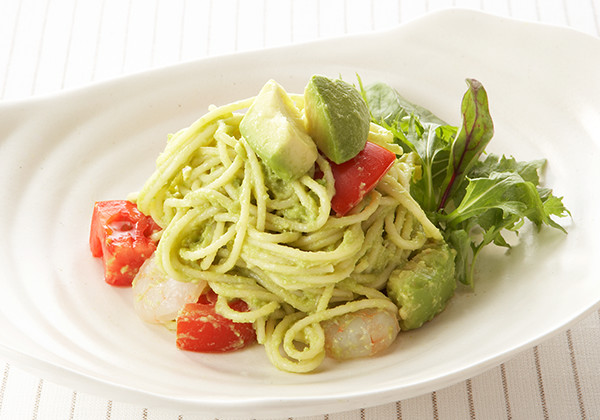

トマト with アボカド

トマトとアボカドのクリーミィパスタ
調理時間：15分、エネルギー：587kcal、塩分：1.3g
クリーミィなアボカド果肉をソースにしたヘルシーでコクのある１品です。
茹でエビの代わりに、蒸し鶏やゆで卵、ツナ缶、湯がいたベーコンなどをあわせてもおいしく頂けます。
材料（4人分）
- カゴメ 高リコピントマト
- 2個
- アボカド
- 2個
- レモン汁
- 大さじ2
- 茹でエビ
- 80g
- スパゲッティ
- 300～360g
（調味料）
- 塩
- 小さじ2/3
- こしょう
- 適宜
- マヨネーズ
- 大さじ1
- オリーブオイル
- 大さじ1
作り方
- 1
- アボカドは皮と種を取り、すぐにレモン汁をかけておく。1/2個分は一口大に切り、残りはフォークの背でつぶしてペースト状にする。
- 2
- トマトとエビも小さめの一口大に切り、①と共に、（調味料）と混ぜ合わせておく。
- 3
- スパゲッティを指定時間通りに茹でてよく湯きりし、②と絡め合わせたら出来上がり。